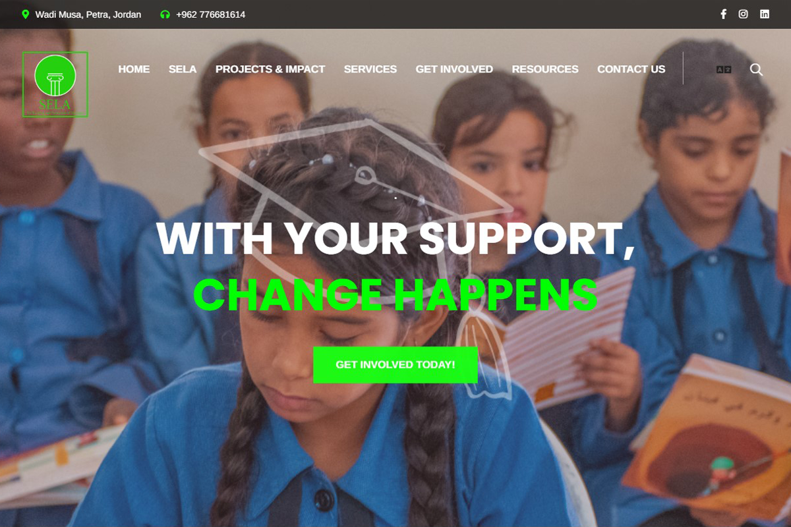
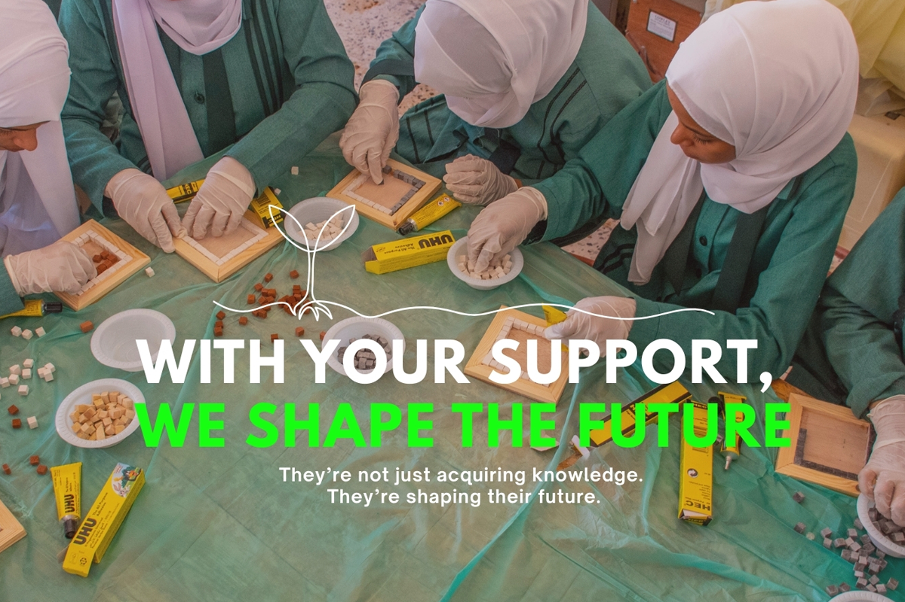
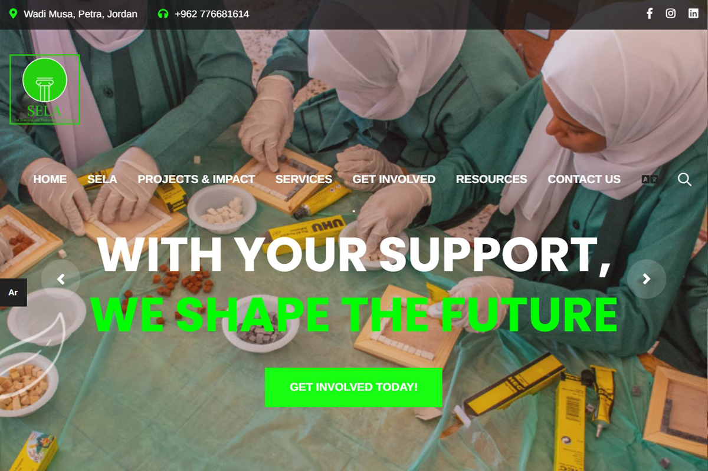
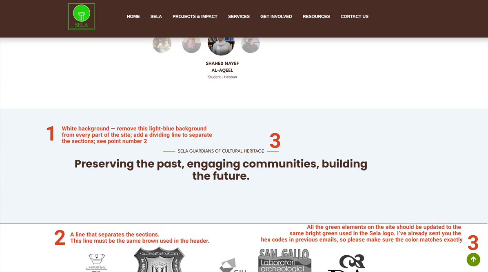

SELA JO -
NGO Jordan
Building a sustainable communication system that shifts an NGO from organisation-centred communication to donor-centred storytelling.

Overview
Client
SELA - Society for Education and Heritage Protection
Role
Creative Direction, Communication Strategy, Visual Identity, Information Architecture, Website Art Direction, Campaign Design, Social Media System and Training.
Year
2024-2025
Transforming the System, Not Rebuilding the Website
SELA already had a technical website. The challenge was not to rebuild its platform, but to transform the communication system around it: how people understand the organisation, discover its projects and recognise its impact.
The existing communication was fragmented. The visual identity was inconsistent, navigation was unclear and projects were difficult to discover. Most importantly, the story began with the organisation rather than with the people who might support its work.
The intervention focused on communication strategy - giving content, channels and visual language a shared logic before any technical development took place.
A Communication Audit as a Starting Point
The project started with a complete communication audit across the website, campaigns, project materials and social channels. This made it possible to identify where messages, hierarchy and visual language were losing clarity.
The strategic objectives were to build a coherent visual identity, simplify navigation, redesign the information hierarchy and shift communication towards donor-oriented storytelling. Projects and measurable impact had to become easier to find, understand and support.
The result was designed as a sustainable communication system: one that could guide everyday decisions as well as major campaigns.
“Why does this project matter?”
Every design decision originated from this question. Navigation, content hierarchy, campaign language and visual choices were shaped to help a visitor understand the relevance of a project before asking them to understand the organisation behind it.
A Shared Visual Foundation
A coherent colour palette, typography system, visual hierarchy and campaign language created a recognisable foundation for the whole organisation. The identity was designed to make complex information clearer while keeping communication human and immediate.
Rather than a fixed visual layer, it became a practical tool for consistency across the website, campaigns, social content and internal materials.
With Your Support, Time Speaks. positioned heritage as a living voice, inviting supporters to see preservation as a way for cultural memory to continue speaking in the present.
With Your Support, We Shape the Future. connected education, heritage and long-term change, turning support into an active contribution to future opportunities.
With Your Support, Change Happens. made impact visible and immediate, connecting individual support with the concrete changes made possible through SELA's work.

Project-First Communication
The technical platform already existed. The intervention focused instead on information hierarchy, navigation, visual consistency and content organisation.
Projects were brought forward as the main entry point to the organisation. This made donor-oriented storytelling possible: visitors could discover a need, understand the work and see its impact before encountering institutional information.

From Strategy to Implementation
Annotated design documents translated strategic choices into clear instructions for the web developer. They defined layout annotations, hierarchy, colour corrections, interface consistency and user journey improvements.
This documentation became the bridge between strategy and implementation: a shared reference that kept decisions coherent through development.
The communication system extended beyond the website through Canva templates, Instagram, Facebook and LinkedIn. Editorial guidelines, a communication workflow and an editorial calendar connected every channel to the same strategic logic, so the website and social media could work as one integrated system.
The goal was not simply a more consistent feed, but a practical ecosystem that made it easier to plan, create and evaluate communication over time.
Building Internal Capacity
The consultancy did not end with the website. A complete knowledge transfer process gave SELA the tools and confidence to continue communicating independently after the consultancy ended.
Canva templates, communication guidelines, principles for visual consistency and a social media workflow were translated into an internal practice. Direct training with the internal communication manager connected these tools to everyday decision-making, from content creation to planning and publishing.
The objective was not to create dependency, but to establish a communication system the organisation could own, adapt and sustain over time.
A System Built to Continue
The project established a donor-oriented communication model, supported by a reorganised information architecture and a coherent visual identity. Projects, needs and impact could be communicated with greater clarity, giving visitors a more immediate way to understand why SELA's work matters.
English and Arabic communication were brought into one consistent system across the website and social media. An integrated channel strategy, Canva communication toolkit and practical workflow made it possible to connect campaigns, daily content and project storytelling without losing focus or visual coherence.
Together, these elements formed an internal communication system: not a collection of isolated assets, but a method for planning, creating and maintaining meaningful communication over time.

Following implementation, SELA reported increased external interest and enquiries. The organisation continued using the communication system across its website and social media, carrying the same strategic and visual logic into its ongoing work.
The internal communication team became able to produce consistent communication independently. This was the intended outcome: a system designed not for a single launch, but for continued use, development and ownership within the organisation.
Explore the Project
Good communication is not about showing what an organisation does.
It is about helping people understand why that work matters.
Building sustainable communication means creating systems that organisations can continue using independently long after the project has ended.